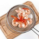
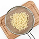

냉라면 샐러드
- 1인분
- 30분 이내
- 누구나
- 재료Ingredients
- 라면1봉,물 2컵,달걀 삶은 것 1개,오이 약간, 쇠고기 혹은 돼지고기 삶은것 약간,물1컵,물김치국물 1컵,참기름 1큰술 ,깨소금 1작은 술, 식초 1큰술, 사이다 1/4컵,겨자약간, 고춧가루 1/2작은술
- 
- 
- 칵테일 새우를 끓는물에 데친 뒤 찬물에 헹궈 물기를 빼서 준비한다.
- 빨강,노랑 파프리카는 씨를 제거하고 0.5cm정도의 두께로 채 썰고 양상추도 파프리카와 같은 크기로 채를 썬다.
- 끓는 물에 라면을 넣고 삻은 뒤 얼음물에 행궈 체에 건져 물기를 빼서 차게 준비한다.
- 그릇에 칵테일 새우와 어린잎 채소,방울토마토,파프리카,양상추,라면을 돌려 담고 땅콩버터 드레싱을 뿌려준다.